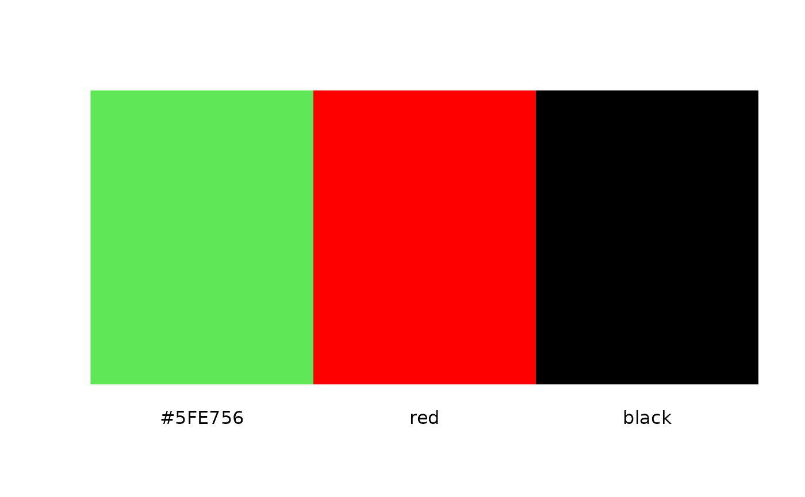
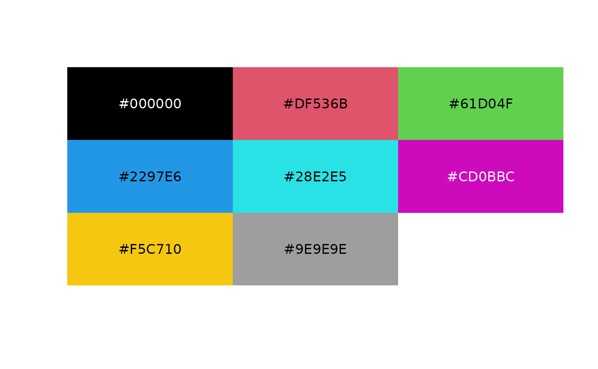

ympes provides a collection of lightweight helper functions (imps) both for interactive use and for inclusion within other packages. It’s my attempt to save some functionality that would otherwise get lost in a script somewhere on my computer. To that end it’s a bit of a hodgepodge of things that I’ve found useful at one time or another and, more importantly, remembered to include here!
Visualising palettes
I often want to quickly see what a palette looks like to ensure I can
distinguish the different colours. The imaginatively named
plot_palette() thus provides a quick overview
plot_palette(c("#5FE756", "red", "black"))
We can make the plot square(ish) by setting the argument
square = TRUE. A nice side effect of this is the automatic
adjusting of labels to account for the underlying colour
plot_palette(palette.colors(palette = "R4"), square = TRUE)
Finding strings
Sometimes you just want to find rows of a data frame where a
particular string occurs. greprows() searches for pattern
matches within a data frames columns and returns the related rows or row
indices. It is a thin wrapper around a subset, lapply and reduce
grep() based approach.
dat <- data.frame(
first = letters,
second = factor(rev(LETTERS)),
third = "Q"
)
greprows(dat, "A|b")## [1] 2 26grepvrows() is identical to greprows() except with the default value = TRUE.
grepvrows(dat, "A|b")## first second third
## 2 b Y Q
## 26 z A Q
greprows(dat, "A|b", value = TRUE)## first second third
## 2 b Y Q
## 26 z A Qgreplrows() returns a logical vector (match or not for each row of dat).
greplrows(dat, "A|b", ignore.case = TRUE)## [1] TRUE TRUE FALSE FALSE FALSE FALSE FALSE FALSE FALSE FALSE FALSE FALSE
## [13] FALSE FALSE FALSE FALSE FALSE FALSE FALSE FALSE FALSE FALSE FALSE FALSE
## [25] TRUE TRUECapturing strings
One of my favourite functions in is strcapture(). This
function allows you to extract the captured elements of a regular
expression in to a tabular data structure. Being able to parse input
strings from a file to correctly split columns in a data frame in a
single function call feels so elegant.
To illustrate this, we generate some synthetic movement data which we pretend to have loaded in from a file. Each entry has the form “Name-Direction-Value” with the first two entries representing character strings and, the last entry, an integer value.
movements <- function(length) {
x <- lapply(
list(c("Bob", "Mary", "Rose"), c("Up", "Down", "Right", "Left"), 1:10),
sample,
size = length,
replace = TRUE
)
do.call(paste, c(x, sep = "-"))
}
# just a small sample to begin with
(dat <- movements(3))## [1] "Mary-Up-2" "Bob-Right-7" "Bob-Left-5"
pattern <- "([[:alpha:]]+)-([[:alpha:]]+)-([[:digit:]]+)"
proto <- data.frame(Name = "", Direction = "", Value = 1L)
strcapture(pattern, dat, proto = proto, perl = TRUE)## Name Direction Value
## 1 Mary Up 2
## 2 Bob Right 7
## 3 Bob Left 5For small (define as you wish) data sets this works fine.
Unfortunately as the number of entries increases the performance decays
(see https://bugs.r-project.org/show_bug.cgi?id=18728 for a
more detailed analysis). fstrapture() attempts to improve
upon this by utilising an approach I saw implemented by Toby Hocking in
the nc and the
function nc::capture_first_vec().
# Now a larger number of strings
dat <- movements(1e5)
(t <- system.time(r <- strcapture(pattern, dat, proto = proto, perl = TRUE)))## user system elapsed
## 1.577 0.038 1.616
(t2 <- system.time(r2 <- fstrcapture(dat, pattern, proto = proto)))## user system elapsed
## 0.035 0.000 0.035
t[["elapsed"]] / t2[["elapsed"]]## [1] 46.17143As well as the improved performance you will notice two other
differences between the two function signatures. Firstly, to make things
more pipeable, the data parameter x appears before the
pattern parameter. Secondly, fstrcapture()
works only with Perl-compatible regular expressions.
Combining values for lazy people
cc() is for those of us that get fed up typing quotation
marks. It accepts either comma-separated, unquoted names that you wish
to quote or, a length one character vector that you wish to split by
whitespace. Intended mainly for interactive use only, an example is
likely more enlightening than my description
cc(dale, audrey, laura, hawk)## [1] "dale" "audrey" "laura" "hawk"
cc("dale audrey laura hawk")## [1] "dale" "audrey" "laura" "hawk"Avoid overwriting data frame columns
Sometimes I find myself needing to add a temporary variable to a data
frame without kaboshing a variable already present.
new_name() provides a simple wrapper around
tempfile() that generates random column names and checks
for their suitability. Not normally the sort of thing I’d wrap but I
find myself writing the same code a lot so here we are
new_name(mtcars)## [1] "new1814553c8e35"
new_name(mtcars, 3L)## [1] "new181413190283" "new181432a59321" "new18142300a4e2"